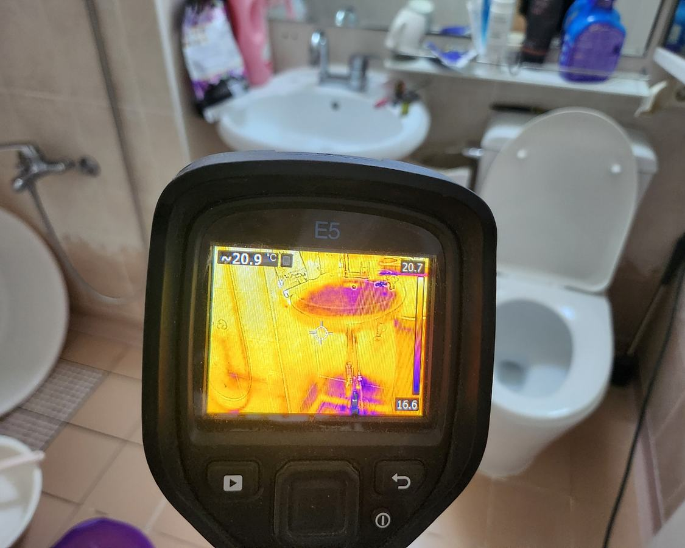
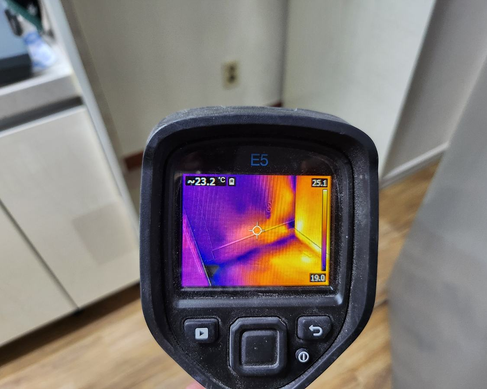
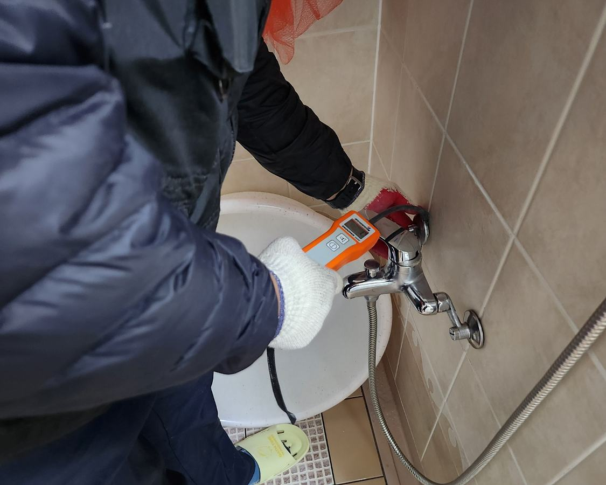
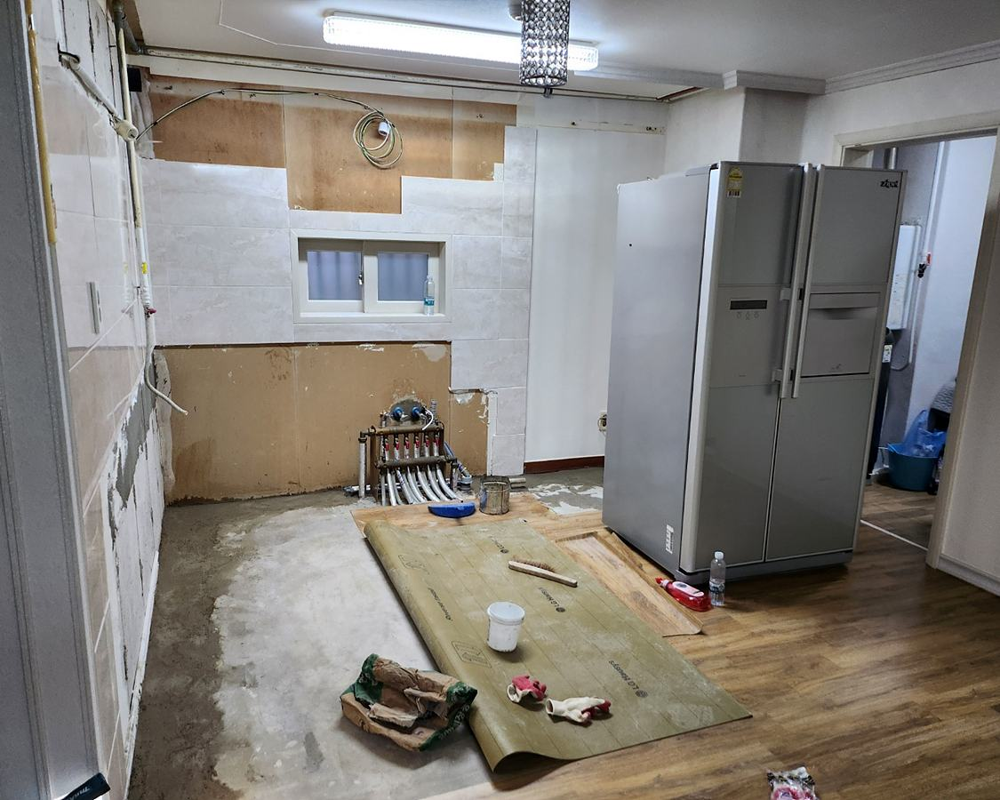

물샘 위치, 발생 시점, 수도·온수·난방 사용과의 연관성을 확인합니다.

광주 · 전남 · 전북 출장 상담
누수탐지
누수는 위치를 추측해 넓게 철거하기보다 배관별 압력시험으로 이상 계통을 구분하고, 필요한 장비를 단계적으로 사용해 타공과 굴착 범위를 줄이는 것이 중요합니다.
현장 조건에 따라 작업 방법과 범위가 달라질 수 있어 증상 확인 후 안내합니다.자가 확인
이런 증상이 있다면 점검이 필요합니다
- 아랫집 천장이나 벽지에 물자국과 곰팡이 발생
- 보일러 압력이 반복해서 떨어지거나 난방수가 줄어듦
- 물을 사용하지 않아도 수도계량기가 움직임
- 바닥 일부가 따뜻하거나 축축하고 마감재가 들뜸
진단부터 확인까지
누수탐지 작업 과정
장비를 먼저 사용하는 것이 아니라 원인과 배관 구조를 확인한 뒤 필요한 작업을 선택합니다.냉수, 온수, 난방배관 등을 구분해 압력 변화를 확인하고 탐지 범위를 좁힙니다.
배관 구조와 현장 조건에 맞춰 여러 결과를 비교해 누수 가능성이 높은 지점을 확인합니다.
설명 후 필요한 부분만 타공·굴착해 보수하고, 2차 압력시험과 순환 점검으로 이상 여부를 재확인합니다.
작업 원칙
불필요한 공사보다 정확한 원인 확인을 우선합니다
현장 상태를 설명하고 필요한 범위와 작업 방법을 안내합니다.
한 가지 장비 결과만 믿기보다 증상과 구조, 검사 결과를 함께 판단합니다.
통수, 압력 또는 영상 확인 등 해당 작업에 맞는 방식으로 결과를 확인합니다.
실제 작업 기록
누수탐지 관련 시공사례
지역과 건물 구조에 따라 원인이 달라질 수 있어 실제 작업 과정을 함께 확인해 보세요.자주 묻는 질문
누수탐지 상담 전 확인사항
누수 위치를 못 찾고도 비용이 발생하나요?
현장 조건과 점검 범위에 따라 비용 기준이 달라질 수 있으므로 방문 전 상담에서 증상과 비용 범위를 확인해 드립니다. 확인되지 않은 무료·무조건 보장 문구는 사용하지 않습니다.
보험 처리에 필요한 자료를 받을 수 있나요?
아랫집 피해가 있는 경우 현장 사진, 원인 확인 내용, 작업내역 등 가능한 자료 준비를 지원합니다. 보상 여부는 가입 보험과 보험사 심사에 따라 달라집니다.
바닥을 많이 뜯어야 하나요?
압력시험과 탐지 결과로 범위를 좁힌 뒤 필요한 부분만 작업하는 것을 원칙으로 합니다. 건물 구조와 배관 상태에 따라 범위는 달라질 수 있습니다.
당일 해결이 가능한가요?
탐지 위치, 자재와 복구 범위에 따라 달라집니다. 현장에서 원인과 보수 방법을 확인한 뒤 가능한 일정을 안내합니다.
증상만으로 작업을 단정하지 않습니다
지역, 건물 형태와 현재 증상을 알려주시면 우선 확인할 내용과 필요한 점검 방향을 안내해 드립니다.
하수구막힘·누수탐지 서비스와 실제 사례 안내
관련 시공사례 확인
해당 지역에서 제공하는 하수구막힘·누수탐지 서비스와 실제 작업 사례를 확인할 수 있습니다. 증상별 진단 방법과 사용 장비를 살펴본 뒤 현장 상황에 맞는 상담을 받아보세요. 하수구 시공사례 보기 누수 시공사례 보기 하수구 FAQ 확인 누수 FAQ 확인
누수탐지 현장 이미지
실제 현장에서 촬영한 작업 사진을 확인할 수 있습니다.




누수 진단 과정
누수탐지 과정
한 가지 장비 반응만으로 공사 범위를 정하지 않고, 증상과 배관 계통에 맞는 검사를 조합해 누수 예상 범위를 좁힌 뒤 필요한 범위만 보수하고 결과를 다시 확인합니다.
모든 현장에 모든 장비를 사용하는 것은 아닙니다. 증상과 배관 구조에 따라 필요한 검사와 작업을 선택합니다. 아래 사진은 실제 작업과정을 설명하기 위한 현장 자료이며, 해당 페이지 지역에서 촬영된 사진으로 표시하지 않습니다.

압력검사 장비로 배관의 압력 변화를 확인하는 모습

열화상 장비로 온도 변화와 누수 의심 범위를 확인하는 모습

탐지가스를 이용해 누수 예상 범위를 좁히는 모습

청음탐지 장비로 누수음을 교차 확인하는 모습

탐지 결과를 바탕으로 필요한 범위만 바닥을 굴설하는 모습

노출된 누수 배관을 확인하고 필요한 구간을 보수하는 모습

배관 보수와 재확인 후 바닥을 복구한 모습
작업 전 확인 → 필요한 작업만 진행 → 작업 후 다시 확인